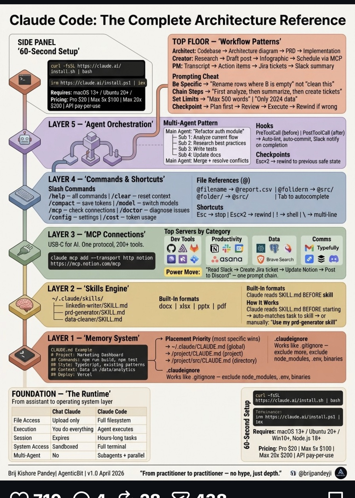

Pandey 의 Claude Code 표준 — 우리 26 플러그인은 이 5 영역에 매핑됨 (Hook · Skill · Command · Agent · Plugin)

▸ Claude Code Architecture Reference / Pandey
▸ COMMANDS
슬래시 명령
사용자가 명시 호출. 우리 = 25+ 슬래시 (/check-agents · /design_ppt · /sync-team)
▸ SKILLS
자동 활성
대화 맥락에서 자동 트리거. 우리 = 38+ 스킬 (route_dispatch · ai-handoff · arch-auto)
▸ HOOKS
이벤트 자동화
Pre/Post 자동 실행. 우리 = 11 hooks (init · pre-task · post-impl · ai-handoff)
▸ AGENTS
전문 에이전트
역할별 분담. 우리 = 6 에이전트 (team-lead · implementer · reviewer · architect)
▸ PLUGINS
위 4개 묶음
commands + skills + hooks + agents 한 단위. 우리 = 26 플러그인